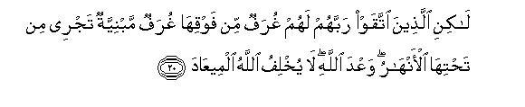
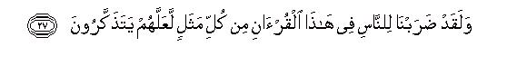
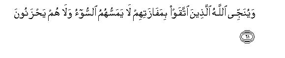

بسم الله الرحمن الرحيم
Sayyid Abul Ala Maududi - Tafhim al-Qur'an - The Meaning of the Qur'an
 39.
Surah Az Zumar (The Troops)
39.
Surah Az Zumar (The Troops)
The Surah derives its name from verse 71 and 73 in which the word zumar has occurred.
In verse 10 (wa ardullah-i-wasi atun: and Allah's earth is vast) there is abundant evidence that this Surah was sent down before the migration to Habash. Some traditions provide the explanation that this verse was sent down in respect of Hadrat Ja'far bin Abi Talib and his companions when they made up their mind to emigrate to Habash.(Ruh al-Maani, vol. XXII, p. 226).
The entire Surah is a most eloquent and effective address which was given some time before the emigration to Habash, in an environment filled with tyranny and persecution, ill-will and antagonism, at Makkah. It is a sermon whose addressees mainly are the unbelieving Quraish, although here and there the believers also have been addressed. In it the real aim of the invitation of Muhammad (upon whom be Allah's peace and blessings) had been enunciated, which is this:Man should adopt Allah's servitude sincerely, and should not pollute his God worship with the service of any other. Presenting this cardinal principle in different ways over and over again, the truth of Tauhid and the excellent results of accepting it, and the falsehood of shirk and the evil consequences of following it, have been explained in a most forceful way, and the people exhorted to give up their wrong way of life and return to the mercy of their Lord. In this very connection, the believers have been instructed, as if to say:"If a place has become narrow for the worship and service of Allah, His earth is vast: you may emigrate to some other place in order to save your faith: Allah will reward you for your patience."On the other hand, the Holy Prophet has been encouraged, so as to say:"Tell the disbelievers plainly that they may do whatever they like, but their persecutions and tyrannies will never deter you from the way of Islam; that they may go on doing their worst to obstruct your way, but you will continue to perform your mission in spite of the adverse conditions and circumstances."

In the name of Allah, the Compassionate, the Merciful.
[1] The revelation of this Book is from the All-Mighty, the All-Wise Allah.1
[2-3] (O Muhammad,) We have sent down this Book to you with the truth,2 so worship Allah alone, making your religion His exclusively.3 Beware! Religion is exclusively Allah's right.4 As for those who have taken other guardians besides Him (and justify their conduct, saying): "We worship them only that they may bring us closer to Allah."5 Allah will surely judge between them concerning all that in which they differ.6 Allah does not show guidance to any liar and denier of the truth.7
[4-6] Had Allah willed to take a son, He would have chosen anyone He pleased out of His creation.8 Glorified is He (that He should have a son)! He is Allah, the One, the Omnipotent.9 He has created the heavens and the earth with the truth.10 He it is Who wraps the night about the day and the day about the night . He has so subjected the sun and the moon that each is moving till an appointed time. Note it well: He is the All-Mighty, the All-Forgiving.11 It is He Who created you from a single being, then from that being He created its mate,12 and it is He Who created for you eight heads of cattle, male and female.13 He shapes you in your mothers' wombs, giving you one form after the other, under three dark veils.14 This same Allah (Whose works are these) is your Lord15 Sovereignty is His.16 There is no god but He.17 Whence are you, then, being turned away?18
[7] If you disbelieve, Allah is independent of you.19 Yet He does not approve of disbelief for His servants.20 And if you are thankful, He approves it for you.21 No bearer will bear the burden of another.22 Ultimately, all of you have to return to your Lord. Then He will tell you what You have been doing. He knows even the secrets of the hearts.
[8-9] When an affliction befalls man,23 he calls upon his Lord, turning to Him (in penitence).24 Then, when his Lord blesses him with his favor, he forgets the affliction for which he was calling upon Him before,25 and sets up others as equals with Allah,26 to lead astray from His way.27 (O Prophet,) Tell him; "Enjoy your disbelief for a while: you shall certainly go to Hell.” (Whose conduct is better, this man or the man) who is obedient, who passes the hours of night standing and prostrating (in worship), and who dreads the Hereafter and hopes for the mercy of his Lord? Ask them, "Can those who know and those who do not know ever be equal?"28 Only men of understanding do accept the admonition.
[10] (O Prophet: ) Say, "O My servants, who have believed, fear your Lord.29 There is good for those who have adopted the righteous attitude in this world,30 and God's earth is vast.31 Those who endure with patience shall be rewarded without measure."32

[11-18] (O Prophet,) say to them, "I have been commanded to serve Allah, making religion sincerely His, and I have been commanded to be a Muslim myself first of all."33 Say, "If I disobey my Lord, I fear the torment of a dreadful Day." Say, "I shall serve Allah alone, making my religion sincerely His. As for you, you may serve whomever you please besides Him." Say, "The real losers are those who would risk loss for themselves and for their families on the Day of Resurrection." Note it well: this is the real bankruptcy.34 They shall have the canopies of fire covering them from above them and also from beneath them. This is the doom of which Allah frightens His servants. So, O My servants, avoid My wrath. Contrary to this, those who refrained from serving taghut35 and turned to Allah, for them there is good news. So (O Prophet,) give good news to those of My servants who listen to the word carefully and follow what is best in it.36 These are they whom Allah has shown guidance and these are the ones who possess understanding.

[19-20] (O Prophet,) who can protect the person for whom the torment has already been decreed?37 Can you rescue him who has already fallen into the fire? Of course, those who truly feared their Lord, for them there are high mansions, built with story upon story, beneath which there will be canals flowing. This is Allah's promise: Allah never fails in His promise.

[21-22] Do you not see that Allah sent down rainwater from the sky, then made it to flow in the earth in the form of springs and fountains and rivers,38 then He brings forth thereby a variety of crops of different kinds; then they ripen and wither and you see them turn yellow, and then, finally, He reduces them to straw? Indeed, there is a lesson in this for the men of understanding.39 Now, can the person whose breast Allah has opened for Islam40 and he is walking in the light shown by his Lord(be like the one who has learned no lesson from these things)?41 Woe to those whose hearts became even more hardened42 from Allah's admonition! They are in manifest error.
[23] Allah has sent down the best of discourses, a Book all whose parts are uniform in style43 and whose themes have been repeated over and over again. Those who fear their Lord are filled with awe when they hear it, and then their bodies and their hearts soften and turn to the remembrance of Allah. This is Allah's guidance, whereby He guides to the Right Way whomever He wills; and the one whom Allah does not guide has no guide whatever.

[24-26] Now, how can you imagine the plight of the one who will receive the severe punishment of the Day of Resurrection on his face?44 To such wrongdoers it will be said, "Taste now (the fruit of) what you had been earning."45 Many a people before them also denied likewise. Consequently, the scourge overtook them from whence they least expected. Then Allah made them to taste disgrace even in their worldly life, but the punishment of the Hereafter is far more terrible. Would that they knew it!



[27-35] We have cited for the people in this Qur'an every kind of parable, so that they may take heed. It is a Qur'an in Arabic46 without any crookedness in it,47 so that they may guard against the evil end. Allah cites a parable: There is a man who is shared by many harsh masters, each pulling him to himself, and there is the other man who entirely belongs to one master. Can the two be alike in comparison?48 Praise be to Allah!49 But most of the people have no knowledge.50 (O Prophet,) you shall die, and they, too, shall die.51 Then on the Day of Resurrection, you all will present your disputes before your Lord. Then, who could be more wicked than the one who invented a falsehood against Allah, and denied the Truth when it came before him? Is not there in Hell a place for such disbelievers? And the one who came with the Truth, and those who confirmed it, they indeed shall remain secure from the torment.52 They shall get from their Lord whatever they will desire.53 This is the compensation of those who do right, so that Allah may wipe off from their account their worst deeds and reward them according to their best deeds.54
[36-41] (O Prophet: ) Is not Allah enough for His servant? These people frighten you with others besides Him,55 whereas there is none to guide him whom Allah lets go astray, and there is none to misguide him whom He guides aright. Is not Allah Mighty and capable of revenge?56 If you ask them, "Who created the heavens and the earth?" they will say, "Allah." Ask them, "When the fact is this, do you think that if Allah wills harm for me, these goddesses, whom you invoke instead of Allah, will avert His harm from me? Or, if Allah wills to show me mercy, will they be able to withhold His mercy?" Therefore, tell them, "Allah is enough for me. In Him do those who trust place their trust."57 Tell them plainly, "O my people: Do whatever you can,58 so shall I. Soon you shall come to know as to whom comes the disgraceful torment and who gets the enduring punishment." (O Prophet:) We have sent down to you for all mankind this Book with the truth. Now whosoever adopts the right way, will do so for his own sake, and whosoever goes astray, will himself bear the burden of his deviation: you are not responsible for them.59

[42-44] It is Allah Who takes the souls at death and the soul of the one, who has not yet died, during sleep.60 Then He withholds that for whom He decrees death and restores the souls of others till an appointed time. In this there are many signs for the people who reflect.61 What! Have they taken besides Allah others as intercessors?62 Say to them, "Will they intercede even if they have no power whatever nor understanding?" Say, "Intercession is wholly in the power of Allah.63 His is the Kingdom of the heavens and the earth. Then, to Him you will be returned."
[45-48] When Allah alone is mentioned, the hearts of those who do not believe in the Hereafter, are filled with anguish; but when others beside Him are mentioned, they are at once filled with joy.64 Say, "O God! Creator of the heavens and the earth, Knower of the unseen and the seen! You alone shall judge between Your servants concerning that in which they have been differing." Even if the wicked people possessed all the wealth of the earth, and as much more, they would be prepared to offer it all as ransom to escape the terrible punishment of the Day of Resurrection; yet from Allah there would appear before them that which they would never have imagined. There, all the evil results of their deeds shall become manifest to them, and the same which they had been mocking shall encompass them completely.
[49-52] Man65 is such that when a little affliction touches him, he calls upon Us, and when We bestow Our favor on him, he says, "I have been given this because of my knowledge!"66 Nay, it is a trial, but most of them do not know.67 The same was said also by those who went before them, but whatever they earned did not avail them anything.68 So, they met the evil consequences of their deeds, and the wicked ones among these people, too, shall soon meet the evil consequences of their deeds. They cannot frustrate Us. And do they not know that Allah provides abundantly for whom He wills and sparingly for whom He wills?69 In this there are signs for those who believe.

[53-61] (O Prophet,) say, "O My servants,70 who have wronged their own souls: Do not despair of Allah's mercy: surely Allah forgives all sins: He is the All-Forgiving, the All-Merciful.71 Return to your Lord and submit to Him before the scourge overtakes you, and then you may get no help from anywhere. And follow the best aspect72 of the Book sent down by your Lord, before the scourge comes down upon you suddenly while you are unaware, lest afterwards someone should say, "Alas for the negligence (in duty) I showed towards Allah! Indeed, I was among those who mocked." Or: "Would that Allah had shown me guidance so that I too would have been among the righteous!" Or, when he sees the torment: "Would that I could get another chance so that I also should be among the doers of good!" (And then he should get this answer:) "Why not! My Revelations did come to you; then you denied them, and showed arrogance, and you were among the disbelievers." You will see that on the Day of Resurrection the faces of those who have invented falsehoods against Allah, will be blackened. Is not there in Hell enough room for the arrogant? On the contrary, those who have adopted righteousness here, Allah will rescue them because of their means of success. No evil shall touch them nor will they grieve.
[62-66] Allah is the Creator of everything and over every thing He is the Guardian.73 To Him belong the keys of the treasures of the heavens and the earth; and the losers are only those who disbelieve His Revelations. (O Prophet,) say to them, "Ignorant people! Do you bid me worship others than Allah?" (Tell them plainly this because) the Revelation sent to you and to all the Prophets before you has been this: `If you commit shirk, all your works will be rendered vain74 and you will be among the losers." Therefore, (O Prophet), you should worship only Allah and be among His grateful servants.
[67-70] These people have not recognized the true worth of Allah as His worth should truly be recognized.75 (As for His Omnipotence) the entire earth on the Day of Resurrection shall be in His grasp and the heavens shall be rolled up in His right hand.76 Glorified is He and Exalted above what they associate with Him.77 And the Trumpet shall be blown on that Day78 and all those who are in the heavens and the earth shall fall down dead except those whom Allah may allow to live. Then the Trumpet shall be blown again and they will all stand up, looking around.79
[71-75] The earth will shine forth with the light of her Lord and the conduct book will be laid open, and the Prophets and the witnesses80 shall be brought in, and the people shall be judged with full justice, and none shall be wronged. And every living being shall be recompensed fully for whatever it had done. Allah knows full well what the people do. (After this Judgment) those who had disbelieved, shall be driven towards Hell, in groups, till, when they have reached there, its gates will be opened,81 and its keepers will say to them, "Did not Messengers come to you from among yourselves, who recited to you the Revelations of your Lord, and warned you that you shall have to encounter this Day?" They will reply, "Yes, they did come, but the sentence of punishment proved true against the disbelievers." It will be said, "Enter the gates of Hell, to dwell therein for ever. What an evil abode for the arrogant! " And those who had refrained from the disobedience of their Lord shall be led towards Paradise, in groups, till, when they arrive there, and its gates shall already have been opened, its keepers will say, Peace be upon you: you have fared well. Enter herein to dwell for every" And they will say, "Praise is for Allah, Who has proved true to us His promise and made us heirs of the earth.82 Now we can dwell in Paradise wherever we like.83 How excellent a reward for the virtuous!84 And you will see the angels circling around the Throne, glorifying their Lord with His praises; and the people shall be judged with full justice, and it will be proclaimed: "Praise is for Allah; Lord of the worlds!"85
1This is a brief introduction to the Surah which only stresses the point that the Qur'an is not Muhammad's word, as the disbelievers assert, but it is Allah's Word, which He Himself has sent down. Along with this, two of Allah's attributes have been mentioned to warn the listeners of two realities so that they do not underestimate this Word but understand its full importance: (1) That Allah Who has sent it down, is All-Mighty; that is, He is so powerful that no power can prevent His will and decisions from being enforced and none can dare resist Him in any way; (2) that He is All-wise; that is, the guidance He is giving in this Book, is wholly based on wisdom, and only an ignorant and foolish person can turn away from it. (For further explanation, sec E.N. 1 of Surah As-Sajdah).
2That is, it contains nothing but the truth, and there is no element of falsehood in it.
3This is a very important verse, which stasis the real objective of the message of Islam. Therefore, one should not pass over it superficially, but should try to understand its meaning and intention well. It has two basic points without grasping which one cannot understand the verse: (1) That the demand is to worship Allah; and (2) that the demand is of such worship as may be performed by making religion exclusively Allah's.
Ibadat is derived from 'abd, and this word is used as an antonym of freeman" for the "slave" and `bondsman" in Arabic. Accordingly, 'ibadat contains two meanings: (1) Worship and devotion; and (2) humble and willing obedience, as is borne out by the well-known and authoritative Arabic Lexicon. Lisan al-'Arab. Thus, according to the authentic lexical explanation, the demand is not only of Allah's worship but also of willing and sincere obedience to His Commands and His Law.
The Arabic word diin contains several meanings:
(1) Domination and sovereignty, rulership and political power and authority to enforce one's decisions on others.
(2) Obedience, compliance with commands and servitude.
(3) The practice and the way that a man follows.
In view of these three meanings, diin in this verse means: "The way of life and attitude which a man adopts after acknowledging the supremacy and accepting the obedience of another; " and `to worship Allah making one's religion exclusively His" means that one should refrain from combining another's worship with the worship of Allah, but should worship Allah alone, should follow His Guidance alone, and should comply with His Commands and injunctions only.
4This is an actual fact and reality, which has been presented as an argument for the above demand. It means: "You should worship Allah, making din exclusively His, for it is only Allah's right that He should be obeyed and worshiped sincerely and exclusively." In other words, there is no one else who may deserve to be worshiped so that he also should be served and worshiped besides Allah and his commands and laws also obeyed. If a person serves another, apart from Allah, sincerely and exclusively, he does wrong. Likewise, if he combines the worship of another with his worship of Allah, this also is against the truth. The best commentary of this verse is the Hadith which Ibn Marduyah has related from Yazid ar-Raqashi. He says: A person asked the Holy Prophet: "We give away our wealth so that we become well-known. Shall we get a reward for this?" The Holy Prophet replied: No. He asked: "What, if one has the intention both of Allah's reward and of reputation in the world?" The Holy Prophet replied: `Allah does not accept any deed unless it is performed exclusively for His sake." After this he recited this same verse.
5The disbelievers of Makkah said, and the polytheists the world over generally say the same, "We do not worship other beings regarding them as our creators: the Creator is only Allah, and He alone is the real Deity; but He is too high for us to have access to Him. Therefore, we make these saintly beings a means to convey our prayers and our petitions to Allah. "
6One should understand it well that unity and concord is possible only through Tauhid: there can be no unity through shirk. The polytheists the world over have never agreed as to which beings are the definite means of access to Allah. Some people have taken some particular gods and goddesses as the means, but even among them there is no agreement on all the gods and goddesses; some others have taken the moon, the sun, Mars, Jupiter, etc. as the means, and they also are not agreed as to which of them holds what rank and which is the real means of approach to Allah; some others have taken the dead saints as the means, but they also differ widely about them: one believes in one saint and another in another. The reason is that the belief about these different beings is neither based on any knowledge, nor has Allah ever sent down a list telling that such and such persons are His special favorites; therefore, they only should be made the means to have access to Him. This is a creed which has spread among the people only on account of superstitions and whims and blind imitation of the elders. Hence the differences.
7Here, Allah has used two words for these people, kazib (liar) and kaffar (denier). They have been called kazib because they have falsely invented this creed by themselves, and then they spread falsehood among others. As for kaffar. it has two meanings: (1) A stubborn disbeliever, i.e.. the people who insist on their false creed even after the doctrine of Tauhid has come before them; and (2) ungrateful for blessings, i.e. they arc receiving all kinds of blessings from Allah, but are thanking those other beings about whom they have assumed that these blessings are reaching them through their agency and influence.
8That is, "It is just impossible that Allah should have begotten a son. The only possibility is that Allah should choose someone for Himself; and whomever He chooses will inevitably be from among the creatures, for everything in the world, apart from Allah, is His creation. Now, evidently, however exalted and chosen a creature might be, it cannot have the position of the offspring. For between the Creator and the created there exists a great disparity of nature and essence and character, and parenthood necessarily demands that there should be the unity of nature and essence between a father and his offspring."
Besides, one should also bear in mind the point that the words: "Had Allah willed to take a son, He would......" themselves give the meaning that Allah has never willed so. Here the object is to impress that not to speak of taking a son, Allah has never even willed so.
9The following are the arguments by which the doctrine of parenthood has been refuted:
First, that Allah is free from every defect and fault and weakness. Obviously, children are needed by the one who is defective and weak; the one who is mortal stands in need of them, so that his progeny should continue to live after him in the world. Likewise, he who adopts a son does so either because he feels the need of having an heir, being childless himself, or he adopts a son being overpowered by love of somebody. Attributing such human weaknesses to Allah and forming religious creeds on their basis is nothing but ignorance and shortsightedness.
The second argument is that Allah in His essence and Being is unique: He is not a member of a species, whereas, evidently, offspring must necessarily belong to a species. Furthermore, there can be no concept of offspring without marriage, and marriage can take place only between homogeneous individuals. Therefore, the one who proposes offspring for the Unique and Matchless Being like Allah, is ignorant and foolish:
The third argument is that Allah is Omnipotent, i.e. whatever is there in the world is subdued to Him and is held in His powerful grasp. No one in this Universe has any resemblance with Him in any way or degree on account of which it may be imagined that he has some relation with Allah.
10For explanation, sec Ibrahim: 19, An-Nahl: 3, Al-'Ankabut: 44, and the E.N.'s thereof.
11That is, "He is All-Mighty: if He wills to punish you, no power can resist Him. But it is His kindness that He does not seize you forthwith in spite of your arrogant and insolent behaviour, but He goes on giving you respite after respite." Here, Allah's making no haste in seizing people in punishment and His giving them respite has been called forgiveness.
12This does not mean that first He created the human beings from Adam and then created his wife, Eve. But here, instead of the chronological order, there is the order of presentation, examples of which arc found in every language. For instance, we say, "Whatever you did today is known to me, and whatever you did yesterday is also in my knowledge." This cannot mean that what happened yesterday has happened after today.
13That is, the camel, cow, sheep and goat whose four males and four females together make eight heads of cattle.
14The three dark veils are: the belly, the womb and the caul or membrane enclosing the fetus.
15"Your Lord" : your Master, Ruler and Providence.
16That is, "All powers and authority rest with Him and it is He Who is ruling over the whole Universe. "
17In other words, the reasoning is this: "When Allah alone is your Lord and His is the sovereignty, then inevitably your Deity also is He. How can another be your deity when he has neither any share in providence nor any role in sovereignty? After all, how can it be reasonable for you to take others as your deities when Allah alone is the Creator of the heavens and the earth, when Allah alone has subjected the sun and the moon for you, when He alone brings the day after the night and the night after the day, and when He alone is your own Creator and Lord as well as of all animals and cattle?"
18These words need deep consideration. It has not been said: "Where are you turning away?" but ¦where are you being turned away?" That is, "There is someone else who is misleading you, and being thus deceived you do not understand such a simple and reasonable thing. " The other thing which by itself becomes evident from the style is: The word "you" is not addressed to the agents but to those who were turning away under their influence. Their is a subtle point in this which can be understood easily after a little thought. Those who were working to turn away others (from the Right Way) were present in the same society and were doing whatever they could openly and publicly. Therefore, there was no need to mention them by name. It was also useless to address them, for they were trying to turn away the people from the service of Allah, the One, and entrapping them for the service of others, and keeping them entrapped for selfish motives. Obviously, such people could not be made to see reason by argument, for it lay in their own interest not' to understand and see reason, and even after understanding they could hardly be inclined to sacrifice their interests. However, the condition of the common people who were being deceived and cheated, was certainly pitiable. They had no interest involved in the business; therefore, they could be convinced by reasoning and argument, and after a little understanding they could also see what advantages were being gained by those who were showing them the way to other deities, after turning them away from Allah. That is why the address has been directed to the common people, who were being misguided rather than those few who were misguiding them.
19That is, "Your disbelief cannot cause any decrease or deficiency in His Kingdom. He will be God if you believe in Him, and He will still be God if you deny Him. He is ruling over His Kingdom by His own power; your believing or denying Him does not affect His Sovereignty in any way." According to a Hadith. Allah says: "O My servants, if all of you, the former and the latter, the men and the jinns, become like the heart of a most sinful person among you, it will cause no deficiency whatever in My Kingdom. " (Muslim).
20That is, "He does not approve, not for any interest of His own but for the interest and benefit of the servants themselves, that they should disbelieve, for disbelief is harmful for them." Here, one should bear in mind the fact that Allah's will is one thing and His approval and pleasure another. Nothing in the world can happen against Allah's will, but many things can happen against His approval, and arc happening day and night. For example, the dominance of the tyrants and the wicked in the world, the existence of thieves and robbers, the presence of murderers and adulterers, are possible only because Allah has made room for the occurrence of these evils and the existence of these criminals in the scheme of things ordained by Him. Then He provides opportunities also of committing evil just as He provides opportunities to the good of doing good. Had He made no room for these evils and had provided no opportunities of committing wrongs to the evildoers, no evil would have ever occurred in the world. All this is based on Allah's Will. But the occurrence of an act under Divine Will does not mean that Allah's approval also goes with it. This may be explained by an example. If a person tries to obtain his living only by lawful means, Allah provides him his living through those means. This is His will. But providing for the thief or the robber or the corrupt person under the will does not mean that Allah also likes stealing and robbery and taking of bribes. Allah says the same thing here, as if to say: "If you want to disbelieve, you may do so: We will not stop you from this nor make you believe forcibly. But We do not approve that you should deny your Creator and Providence, being His servants, for it is harmful for yourselves: Our Godhead is not harmed and affected by it in any way."
21The word shukr (gratitude) has been used here as against kufr (disbelief) instead of Iman (belief). This by itself shows that kufr is, in fact, ingratitude and disloyalty, and faith is the necessary requirement of gratitude. The person who has any feeling of the favors of Allah Almighty, cannot adopt any other way than that of belief and faith. Therefore, gratitude and faith are correlatives: wherever there is gratitude there will be faith also. On the contrary, wherever there is disbelief, there will be no question of gratitude at all, for gratitude along with disbelief is meaningless.
22It means this: "Each one of you is himself responsible for his deeds, If a person adopts disbelief in order to please others, or to avoid their displeasure, those others will never bear the burden of his disbelief, but will leave him to bear his own burden. Therefore, anyone who comes to know that disbelief is wrong and belief is right, should give up the wrong attitude. and adopt the right attitude, and avoid making himself liable for Allah's punishment by associating himself with his family or brotherhood or nation.
23"The man": the disbeliever who adopted the way of ingratitude.
24That is, "At that time he does not remember those other deities whom he used to invoke in good times; but he despairs of them all and turns only to Allah, Lord of the worlds." This is a clear proof of the fact that in the depths of his heart he has the feeling that all other deities are helpless, and the realization that Allah alone is the Possessor of all powers and authority, lies buried and hidden deep in his mind. "
25That is, "He again forgets the bad times when abandoning all other deities he was invoking only Allah, the One."
26That is, "He again starts serving others: he obeys them, prays to them and makes offerings before them."
27That is, "He is not content with his own self having gone astray, but also leads others astray, telling them that the affliction which had befallen him, had been averted by the help of such and such a pious man or saint, or god and goddess." Thus, many other people also put their faith in these deities besides Allah, and are further misled as the ignorant and foolish people describe their experiences before them.
28It should be noted that two kinds of the men are being contrasted here. First, those who turn to Allah when a calamity befalls them, but worship others than Allah normally. Second, those who have made it their permanent way of life to obey Allah and worship and serve Him, and their worshiping Him in solitude during the night is a proof of their sincerity. The first kind of the men have been called ignorant by Allah, even if they might have devoured whole libraries. And the second kind of the men have been called the learned, even if they might be illiterate. For the real supremely important thing is the knowledge of the Truth and man's action according to it, and on this depends his true success. Allah asks: How can these two be equal? How can they possibly follow the same way together in the world, and meet with the same end in the Hereafter?
29That is, Do not rest content with belief but follow it up with piety and fear of God. Act according to what Allah has enjoined and avoid what He has forbidden and live in the world fearing His accountability.
30Good and well-being both of this world and of the Hereafter.
31That is, "If one city, territory or land has become difficult for the worshipers of Allah, they may emigrate to another place where they may not have to face any such hardship. "
32"Those . . . measure" : Those who brave all kinds of hardships and persecutions in following the way of God-worship and piety but do not abandon the way of the Truth. This also includes those people who emigrate to other countries and experience hardships in the foreign land for the sake of religion and faith, and those also who continue to face every kind of temptation and calamity firmly and patiently in the land where they are being persecuted."
33That is, "My mission is not only to exhort others but also to practice what I preach myself: I first myself follow the way which I call others to follow."
34Bankruptcy is loss of a person's capital and failure of his business so that he is unable to pay his debts in full. This same metaphor Allah has used here for the disbelievers and polytheists, The sum total of whatever man has got in this world-his life, his intellect, body, powers, capabilities, means and opportunities-is in fact, the capital, which he invests in the business of the worldly life. If a person invested this whole capital on the hypothesis that there is no God, or that there are many gods, whose servant he is, and that he is not accountable to anyone, or that someone else will rescue him on Judgment Day, it would mean that he made a losing bargain and lost all his capital. This is his first loss. His second loss is that in everything that he did, on the basis of the wrong hypothesis, he went on wronging himself and many other men, and the coming generations and many other creatures of Allah, throughout his life. Thus, he got into countless debts, but has no money with which he may fully pay his debts. Over and above this, he has not only himself incurred this loss, but has caused the same loss to his children and near and dear once and friends and fellow countrymen by his wrong education and training and wrong example. It is these three losses together which Allah has called khusran-i-mubin (utter bankruptcy) in this verse.
35Taghut is from tughyan and means rebellion. If someone is called taghut (rebellion) instead of taghi (rebel), it would mean that he is a rebel incarnate. For example, if a person is called husn (beauty) instead of hasin (beautiful), it would mean that he has reached perfection in beauty. The other deities than Allah have been called taghut because it is rebellion to worship others besides Allah, but the one who has others worship him, is a rebel of the worst kind. (For further explanation, see AI-Baqarah: 256, Al-Nisa: 60, 76, An-Naml: 36 and the E.N.'s thereof).
36This verse can have two meanings:
(1) That they do not follow every voice but ponder over what every man says and accept only what is right and true; and
(2) that they do not try to give a false meaning to what they hear but adopt its good and righteous aspects.
37That is, the person who has made himself worthy of Allah's punishment and about whom Allah has already decided that he will be punished.
38The word yanabi` in the Text is comprehensive and applies to all the three sources of water.
39That is, "A man of understanding learns this lesson from it that the life of this world and its adornments are all transitory: the end of every spring is autumn; the fate of every youth is weakness and death; and every rise has a fall. Therefore, this world is not something of which one should be charmed and enamored so as to forget God and the Hereafter and should conduct himself here in a manner as to nun his Hereafter, only for the sake of enjoying the short lived pleasures of this world. Then a man of understanding also learns this lesson from these phenomena that the spring and autumn of this world are only under Allah's control: Allah allows to grow and prosper whomever He wills and ruins and lays waste whomever He wills. Neither it is in anybody's power to stop the growth of someone whom Allah wills to grow, nor has anyone the power to save him from destruction whom Allah wills to destroy.
40"Whose breast... Islam": Whom Allah helps to learn a lesson from these realities and to be satisfied with Islam as based on the Truth. Opening of a man's breast for something is, in fact, a state in which there remains no anxiety or ambiguity or suspicion and doubt in his mind about the thing, nor has he the feeling of any danger and loss in accepting and adopting it, but he decides with full satisfaction of the heart that it is the Truth; therefore, he must follow it whatever be the consequences. Having made such a decision when a person adopts the way of Islam, he obeys whatever Command he receives from Allah and His Messenger willingly and with pleasure, without any hesitation. He accepts whatever beliefs and ideas, rules and regulations, he comes across in the Book of Allah and the Sunnah of His Prophet as if they were the voice of his own heart. He does not feel any compunction on giving up an unlawful gain, because he believes that it was no gain for him at all; it was rather a loss from which Allah saved him by His grace. Likewise, even if he incurs a loss while following the way of righteousness, he does not feel sad about this but bears it with patience and regards it as an ordinary loss as compared to the loss of turning away from the Way of Allah. The same is his behavior on confronting dangers. He believes that there is no other way for him, which he may follow in order to avoid the danger. The Straight Way of Allah is only one, which he has to follow in any case: if there is a danger in following it, let it be.
41"In the light shown by his Lord" : In the light of the knowledge of the Book of Allah and the Sunnah of His Prophet, by the help of which he sees clearly at every step which is the straight path of the Truth among the countless by-paths of life.
42As against the opening of the breast there can be two other states of man's heart: (1) The state of narrowing of the breast and squeezing of the heart; and in this state there still remains some room for the truth to permeate it; and (2) the state of hardening or petrifying of the heart; in this there is left no room whatever for the truth to permeate. About this second state Allah says that the person who reaches such a stage is totally ruined. This means that if a person becomes inclined to accept the truth, even though with an unveiling and squeezed heart, there remains some possibility for him to be redeemed. This second theme becomes obvious from the style and tenor of the verse itself, though Allah has not stated it directly. For the real intention of the verse was to warn those who were bent upon stubbornness in their antagonism towards the Holy Prophet, and had made up their mind not to listen to him at all. For this they have been warned, as if to say: "You take pride in this stubbornness of yours, but, as a matter of fact, there cannot be a greater misfortune and unworthiness of man than that his heart should become even more hardened, instead of becoming soft, when he hears Allah being mentioned and the admonition sent by Him.
43That is, there is no contradiction and disagreement between them. The whole Book, from the beginning to the end, projects one and the same aim, one and the same belief, and one and the same system of thought and action. Each of its parts confirms and supports and explains the other themes; and there is perfect consistency in it both in meaning and in style.
44One takes a blow on one's face only when one is absolutely helpless and powerless, otherwise until one has some power to resist, one goes on receiving the blows on the other parts of one's body but saves one's face. Therefore, here the extreme state of helplessness of a person has been depicted, saying that he will receive the severe punishment on his face.
45The word kasab, in the Qur'anic terminology, implies one's descrying and earning a reward and punishment in consequence of one's actions and deeds. The real earning of a doer of good is that he becomes worthy of Allah's reward, and the earning of the evil-doer is the punishment that he will receive in the Hereafter.
46That is, "It has not been sent down in a foreign language so that the people of Makkah and Arabia should stand in need of a translator or interpreter, but it is in their own language, which they can understand directly."
47That is, "There is nothing of double-dealing in it so that a common man should find it difficult to understand, but everything has been presented in it in a straightforward manner, from which everyone can know what this Book states as wrong and why, what it states as right and on what ground, what it wants the people to accept and what it wants them to reject, and what it enjoins and what it forbids."
48Allah in this parable has explained the difference between shirk and Tauhid and the impact each has on human life so clearly that it is not possible to put across such a vast theme so concisely and effectively in other words. Everyone will admit that the person who has many masters, each one pulling hire to himself, and the masters also so ill-tempered that no one spares him time in his service to obey the other, and no one rests content only with threatening and cursing him if he fails to carry out his command from among the contradictory commands of the other masters, but is bent upon punishing him, his life would certainly be in great anguish. On the contrary, the person who is the slave or servant of only one master, would be living a life of ease and comfort because he will not have to serve and seek the pleasure of another master. This is such a straightforward thing which does not need deep consideration for its understanding. After this it remains no longer difficult for a person to understand that the peace of mind and satisfaction that accrue to him from the service of One God, can never accrue from the service of many gods.
Here, it should be understood well that the parable of many ill-tempered and contesting masters cannot apply to the images of stone, but it only applies to living masters, who practically give contradictory commands to man and keep pulling him to themselves in actual reality. One such master sits in one's own self, which presents before him desires of every kind and compels him to fulfill them. Other countless masters are there in the house, in the family, in the brotherhood, in the society, among the religious guides and the rulers and legislators, in the business and economic circles and among the dominant powers of civilization whose contradictory demands and requirements keep on pulling man to themselves at All times; then any god whose demand he fails to fulfill in any way, does not let him go unpunished in his own circle. However, each one's instrument of punishment is different. Someone causes a heart-break, another takes offense, another humiliates, another boycotts, another bankrupts, another makes a religious or a legal attack. Man has no other way of being saved from this anguish and agony but to adopt the Way of Tauhid and become the slave of One God, and throw off the yoke of servitude of every other god.
Adoption of the Way of Tauhid also has two forms, which lead to different results:
First, that an individual should decide to become the servant of One God individually but his environment is hostile. In this case the external conflict and his anguish and agony might increase, but if he has adopted the Way sincerely, internal peace and satisfaction will necessarily accrue. He will turn down every such desire of the self as goes against the Divine Commands, or whose fulfillment may clash with the demands of God-worship. He will also reject every such demand of the family, society, nation, government, religious guides and economic powers that conflicts with the Divine Law. Consequently, he might have to face extreme hardships, rather he will surely face, but his heart will have full satisfaction that he is fulfilling the demand of the servitude of that God Whose servant he actually is, and that those whose servant he is not, have no right on him, because of which he may have to serve them against the Command of his God. No power of the world can deprive him of this satisfaction of the heart and peace of mind; so much so that even if he has to go to the gallows for its sake, he will go to it with a clear conscience, and he will have no compunction as to why he did not save his life by bowing before the false gods.
The second form is that the whole society be established on the basis of the Tauhid imbibing the principles of morality, civilization, culture, education, religion, law, social custom, politics, economics in every sphere of life as a creed, which the Master of the Universe has given through His Book and His Messenger. The law should declare as a crime everything which God's religion has declared sinful and the government administration should try to eradicate the same; the system of education and training should prepare the minds and character to avoid the same; the same should be condemned from the religious pulpit, and regarded as vicious and forbidden in every economic enterprise. Likewise, everything that Allah's religion has declared as good and virtuous should be protected and defended by the law, developed by the administrative forces, impressed in the minds and instilled in character by the entire system of education and training, infused from the religious pulpit, admired by the society and followed by it practically and enforced in every economic enterprise. This is how man can attain to perfect internal and external peace and satisfaction, and all the doors to material and spiritual progress are thrown open, for the conflict in it between God-worship and the worship of others would be reduced to the minimum.
Although Islam invites every single individual to adopt Tauhid as his creed and to worship Allah alone, braving every danger and hardship, even in the absence of the established order, it cannot be denied that Islam's ultimate aim and object is to establish this second order, and the same has been the objective of the endeavors of all the Prophets: to bring into existence a community of the Muslims, who should follow Allah's religion collectively, free from the domination and influence of unbelief and the unbelievers, No one. unless he is unaware of the Qur'an and the Sunnah and senseless, can say that the objective of the Prophets' struggle has been only the faith and obedience of the individual, and that it has never been their aim to enforce and establish Islam in the society and state.
49Here, in order to understand the real significance of al-hamdu-lillah (praise be to Allah), one should visualize this scene: after presenting the above question before the people the speaker observed a pause so that the opponents of Tauhid could give an answer to it if they had any. Then, when they could not give any answer, and from nowhere it was said that both were equal, the speaker said: "AI-hamdu-lillah: Thank God that you too appreciate the difference between the two situations and none among you can dare say that slavery to many masters is better than slavery to one master, or that both are equal.
50That is, "You fully understand and appreciate the difference between to many masters, but when you are made to God-worship and the worship of many gods, slavery to one master and slavery understand the difference between you show lack of understanding.
51There is a subtle gap between the preceding sentence and this, which can be filled by every intelligent person himself by a little consideration of the context. It contains this theme: "You are making every effort to make the people understand a simple thing in a simple way, but they are not only showing stubbornness with regard to what you say and rejecting it but are also bent upon harming you in order to suppress the manifest truth. Well, neither you are immortal nor they : both you and they have to die one day: then, each of you will experience his own end.
52It means this: "As to who will receive punishment in the trial before Allah on the day of Resurrection, you should note it well that the punishment inevitably will be inflicted on those wicked people who invented a false creed that there were other associates also with Allah, who had a share in His Being, authority, powers and rights, and worse than that, when the truth was presented before them, they not only paid no heed to it, but, on the contrary, treated the one who presented it as an impostor. As far as the person who came with the truth, and those who affirmed faith in him, are concerned there can obviously be no question of their receiving any punishment from the Court of Allah.
53One should note that the words used here are inch Rabbi-him (with their Lord) and not fil-jannah (in Paradise), and obviously man reaches in the presence of his Lord just after death. Therefore, the intention of the verse seems to be: Not only after entering Paradise but right from the time of death till his entry into Paradise also Allah will treat the righteous believer in the same kind manner. The believer will certainly desire to be saved from the torment of barzakh. from the severities of the Day of Resurrection and Judgment, from the humiliation of the Plain of Gathering and from the punishment of his errors and shortcomings, and Allah Almighty will fulfill all his desires.
54The people who believed in the Holy Prophet had happened to commit most heinous sins, both ideological and moral, in the days of ignorance, and after affirmation of the faith the good that they did was not only that they gave up the falsehood they had been professing and accepted the Truth that the Holy Prophet had presented, but in addition, they had performed the best righteous acts in morality. devotion and in their dealing's with others, Allah says: The worst deeds that they had committed in the days of ignorance will be wiped off from their account, and they will be rewarded for the best of their deeds found in their conduct book.
55The disbelievers of Makkah used to say to the Holy Prophet, "You behave insolently in respect of our deities and utter rude words against them : you do not know how powerful they are and what miraculous powers they possess. Anybody who dishonored them was ruined. If you also do not desist from what you say against them, you too will be annihilated.
56That is, "This also is a result of their lack of guidance that the foolish people esteem highly the power and honor of their deities but they never think that Allah also is Almighty and they can also be punished for insulting Him by the shirk they are committing against Him. "
57Ibn Abi Hatim has related from Ibn `Abbas that the Holy Prophet said: 'The person who desires that he should become most powerful among men should repose his trust in Allah; and the person who desires that he should become the wealthiest among men should have more trust in that which is with Allah than that which is in his own hand; and the person who desires that he should become most honorable among men should fear Allah Almighty."
58That is, You may go on doing what you can in order to harm me and do not give me any respite.
59That is, It is not for you to bring them to the Right Path. Your only duty is to present the Right Path before them. If they prefer to remain astray after that, you are not responsible for it.
60"Taking the souls during sleep" implies the suspension of the powers of feeling and consciousness, understanding and will.
61By this Allah wants every man to realize how life and death are entirely in His own hand. No one has the guarantee that he will certainly get up alive in the morning when he goes to sleep at night. No one knows what disaster could befall him within a moment, and whether the next moment would be a moment of life for him or of death. At any time, while asleep or awake, in the house or outside it, some unforeseen calamity, from inside his body or from outside, can, suddenly cause his death: Thus, man who is so helpless in the hand of God, .would be foolish if he turned away from the same God or became heedless of Him.
62That is, "In the first place, these people have foolishly presumed that there are some beings who wield great influence with Allah, and whose intercession is never turned down, whereas there is no proof of their being intercessors at all, nor has Allah ever said that they hold such a position with Him, nor did these beings themselves ever claim that they would use their influence with Allah and help them out in every case. Another folly of these people is that they have ignored the real Master and have believed the imaginary beings to be all powerful, who deserve to receive all their devotion and dedication.
63That is, "Not to speak of getting his intercession granted, no one has the power to stand before Allah as an intercessor. The right to grant or not to grant anyone the permission to intercede with Him exclusively rests with Allah. Then He may allow intercession for whomever He may please and forbid for whomever He may please. " (For understanding the difference between the Islamic concept of intercession and the polytheistic concept, see Al-Baqarah: 255, Al-An`am: 51, Yunus: 3, 18, Hud: 105, Ar-Ra`d 11, An-Naml: 73, 84, Ta Ha: 109-110, Al-Anbiya': 23, Al-Hijr: 76, and the E.N.'s thereof and E.N. 40 of Saba.
64This evil is common to almost all polytheistic people of the world, and even some unfortunate Muslims also suffer from it, They profess with the tongue that they believe in Allah, but when One Allah alone is mentioned before them, their faces arc distorted, and they say, "This man certainly does not believe in the saints and holy men; that is why he talks of Allah and Allah alone. " And if others besides Allah arc mentioned, they are delighted, and their faces brighten up with joy. Their this attitude shows as to who is the actual object of their love and esteem. 'Allama Alusi, in his commentary Ruh al-Ma ani, has related his own experience here. He says: "One day I saw that a man was invoking the help of a dead saint in his affliction. I said; O bondsman of Allah, invoke Allah, for He Himself says: 'If My servants ask you, O Prophet, concerning Me, tell them I am quite near to them. I hear and answer the prayer of the supplicant when he calls to Me," (AI-Baqarah: 186), Hearing this the man became angry, the people told me afterwards that he said: This man is a denier of the saints; and some others heard him also say: The saints answer the prayers more promptly than does Allah.
65"The man" : the one who has aversion to Allah and whose face is distorted on hearing Allah alone being mentioned.
66This sentence can have two meanings:
(1) "That Allah knows that I am worthy of this blessing; that is why He has given me All this, otherwise He would not have blessed me if I had been an evil and wicked person in His sight;" and
(2) `that I have attained to this by virtue of my ability."
67People ignorantly think that whoever is being blessed by Allah in some way is being so blessed necessarily on account of his worth and ability and that the same is a sign or proof of his being a favorite in His sight; whereas the fact is that whoever is being given something here, is being given it for the sake of a trial by Allah. This is a means of the test, and not any reward for ability, otherwise many able and worthy people would not be living in poverty and many unworthy people would not be rolling in prosperity. Likewise, these worldly blessings arc not a sign of one's being a favorite with Allah either. Everyone can see that many good people whose goodness is unquestionable arc living in hardships in the world, and many wicked people whose evil-doing is well known are enjoying the pleasures of life, Now, can a sensible man take the affliction of the one and the life of ease and comfort of the other as an argument to say that Allah hates the good man and prefers the bad man?
68That is, "When they were seized for evil-doing, the ability of which they were so proud, did not avail them anything, and this also became known that they were not Allah's favorites. Evidently, if their earning had been due to their capability and their being favorites with Allah, they would not have been seized for evil-doing at all."
69That is, "The Abundance or restriction of the provisions is based on another law of Allah, which has some other wisdom. The distribution of the provisions does not at all depend on man's worthiness and ability, or on his being a favorite of Allah, or for being under His wrath. " (For details, see At-Taubah: 55, 69, 85; Yunus: 17; Hud: 3, 27; Ar-Ra`d: 26; Al-Kahf: 34-36; Ta Ha: 131-132; AI-Anbiya': 105; Al-Mu`min: Introduction and vv. 55-56; Ash-Shu'ara`: 111; AI-Qasas: 78, 89 and the E N. thereof. and E.N.'s 54 to 60 of Saba).
70Some commentators have given a strange interpretation to these words. They say that Allah Himself has commanded the Holy Prophet to address the people as "My servants" therefore, all men are the servants of the Holy Prophet. This interpretation is no interpretation at all but a worst distortion of the meaning of the Qur'an and indeed tampering with the Word of Allah. If this interpretation were correct, it would falsify and negate the whole Qur'an.
For the Qur'an, from the beginning to the end, establishes the concept that men are the servants of Allah alone, and its whole message revolves around the point that they should serve none but One Allah alone. The Holy Prophet (upon whom be Allah's peace) himself was Allah's servant. Allah had sent him not as rabb (sustainer, providence) but as a Messenger so that he should himself serve Him and teach the other people also to serve Him alone. After all, how can a sensible person believe that the Holy Prophet might have one day stood up before the disbelieving Quraish of Makkah and made the sudden proclamation: "You are in fact the slaves of Muhammad and not of al- `Uzzah and ash-Shams." (We seek Allah's refuge from this)
71The address here is to all mankind. There is no weighty argument to regard only the believers as the addressees. As has been observed by 'Allama Ibn Kathir, to address such a thing to the common men does not mean that Allah forgives all sins without repentance, but Allah Himself has explained in the following verses that sins are forgiven only when the sinner turns to Allah's worship and service and adopts obedience to the message sent down by Him. As a matter of fact, this verse brought a message of hope for those people who had committed mortal sins like murder, adultery, theft, robbery, etc. in the days of ignorance, and had despaired whether they would ever be forgiven. To them it has been said: "Do not despair of Allah's mercy: whatever you might have done in the past, if you sincerely turn to your Lord's obedience, you will be forgiven every sin." The same interpretation of this verse has been given by Ibn `Abbas, Qatadah, Mujahid and Ibn Zaid. (Ibn Jarir, Bukhari, Muslim, Abu Da'ud, Tirmidhi). For further explanation, see AI-Furqan: 70-71 and the E.N.'s thereof.
72"To follow the best aspect of the Book of Allah" means that one should carry out the Commands Allah has given and refrain from what He has forbidden, and learn lessons from what He has brought out in the parables and narratives. As against this, the one who turns away from Allah's Commands, indulges in the forbidden things, and does not heed His admonitions, follows the worst aspect of the Book of Allah, i.e. that aspect which the Divine Book has declared as the most evil.
73That is, "He did not just create the world and then left it alone, but He is constantly guarding and watching over everything. Just as everything in the world came into being by His act of creation so everything is living and surviving by His leave, and flourishing and functioning only under His protection and care."
74That is, "No act which is performed along with shirk will be adjudged as a righteous act, and no one who, being a mushrik, performs many acts as good acts in his personal judgment, will deserve any reward for them, and his whole life work will be deemed to have gone waste."
75That is, "They have no conception of the greatness and glory of Allah; they have never tried to understand how high is the position of the Lord of the Universe and how insignificant arc the beings whom these foolish people have made associates in Godhead and worthy of their worship."
76This is a figurative way of describing the complete control and authority of Allah over the earth and heavens. Just as a man encloses a small ball in the hollow of his hand with perfect ease, or a person rolls up an handkerchief in his hand without any difficulty, so will All men (who fail to conceive the greatness and glory of Allah) sec with their own eyes, on the Day of Resurrection, that the earth and the heavens arc like an ordinary ball and a small scroll in the hand of Allah. Traditions have been related in Musnad Ahmad, Bukhari, Muslim, Nasa'i, Ibn Majah, Ibn Jarir and others, on the authority of Hadrat 'Abdullah bin 'Umar and Hadrat Abu Hurairah, that once during a sermon the Holy Prophet recited this verse and then said: "Allah will hold the heavens and the earths (i.e. the planets) in His grasp and will roll them about in such a way as a child rolls a ball, and will say: 'I am God, the One: I am the King: I am the All-Mighty, Owner of glory: Where arc the kings of the world? Where are the tyrants? Where are the arrogant?" -Saying these words he started so shaking that we feared that he might topple over along with the pulpit."
77That is, there is no comparison whatever between Allah's greatness and glory and the insignificance of those who are associated with Him in Godhead.
78For the explanation of Sur (Trumpet), see AI-An`am: 73, Ibrahim: 48, AI-Kahf: 99, Ta Ha: 102-103, Al-Hajj: 1, AI-Mu'minun: 101. An-Naml: 87 and the E,N.'s thereof.
79Here, mention has been made of the Turmpet's being blown only twice. Besides, in Surah An-Naml there is the mention of another blowing of the Trumpet before these two, on hearing which everything in the earth and the heavens will be struck with terror (v. 87). On this very basis, the Ahadith mention that the Trumpet will be blown thrice:
(1) Nafakhat al-Faza`on hearing which everything will be struck with terror,
(2) nafakhat as-Sa `q, on which everyone will fall down dead, and
(3) nafakhat al-qiyam li-Rabbit- alamin, i.e. the Trumpet on the blowing of which all dead men will return to life and arise from their graves to present themselves before their Lord.
80"The witnesses" : those who will bear witness to the effect that the Message of Allah had been conveyed to the people as well as those who will bear witness to the acts and deeds of the people. It is not necessary that these witnesses will be only human beings. The angels, the jinns, the beasts, men's own limbs, their dwelling places and the trees and stones, will all be included among the witnesses.
81That is, the gates of Hell will not have already been opened but will be opened on their arrival there just as the gate of a prison is opened on the arrival of the culprits and is closed as soon as they have entered it.
82For explanation, sec Ta Ha: 106-107, 124; Al-Anbiya': 106-107 and the E.N.'s thereof.
83That is, "The Paradise which has been granted to each of us, is now our property and we possess full rights over it."
84Maybe this is said by the dwellers of Paradise, or maybe this sentence is added by Allah to what the dwellers of Paradise will say.
85That is, the entire Universe will proclaim the praises of Allah Almighty.